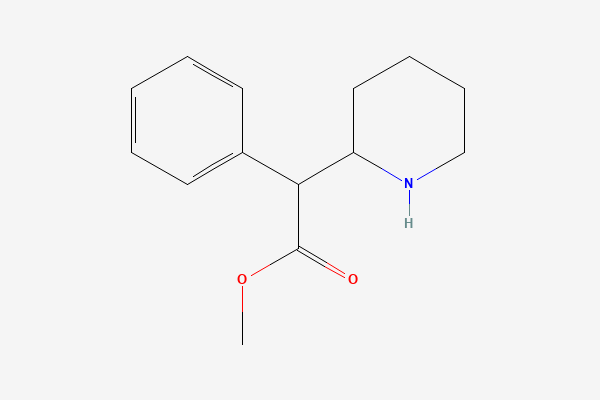

BHWiki redesign lab
BHWiki redesign lab
A subpage experiment in the existing BHWiki language. Choose the data treatment and page-type cues while the content stays familiar.
Layout selected · refine details
bhwiki.
Search substances, outcomes, or mechanisms
Substance
Methylphenidate
A transporter target, a clinical context.
A stimulant medicine with formulation-dependent delivery. ADHD treatment findings and attention-task results stay attached to their population and exposure context.
5 sourcesCompareConnections

C₁₄H₁₉NO₂ · 233.31 g/molSourced draft. Evidence is context-bound; editorial status is not a safety or efficacy grade.
Research signal
Measured outcomes
What the research measured, for whom, and under which exposure.
Risk map
Explore pair Interactions
Keep status visible before the reader opens details.
AvoidMAOIsserious interaction signalSource context
CautionCannabis · SSRIscontext and monitoring requiredSource context
MonitorOther stimulantsadditive cardiovascular loadSource context
Measured outcomes
4 outcome domainsWhat the studies measured
Each signal retains the population, exposure, endpoint, and source context.
Attention Increased
Attention-task performance improved in the subgroup meeting ADHD diagnostic criteria. Participants without that diagnosis showed a different response pattern.
- Population
- Adults meeting DSM-IV ADHD criteria
- Exposure
- Single 30 mg oral study exposure
- Measure
- Sustained-attention task
Executive function Context-dependent
Direction varied by diagnosis, task, and acute exposure. The observed change is not a universal cognitive-enhancement claim.
- Population
- Clinical and healthy samples
- Exposure
- Acute oral study contexts
- Measure
- Working-memory and response-inhibition tasks
Sleep Small worsening
Later exposure was associated with longer sleep-onset latency in healthy adults.
- Population
- Healthy adults
- Exposure
- Later-day stimulant exposure
- Measure
- Sleep onset and total sleep time
Heart rate Small increase
Cardiovascular measures remain attached to dose, formulation, and population rather than being presented as a single risk score.
- Population
- Mixed clinical and healthy populations
- Exposure
- Therapeutic and single-dose contexts
- Measure
- Heart rate and blood pressure
Doses & routes
1 curated exposurePublished exposure records
Study and label context, never a personal dosing recommendation.
Research exposure30 mgsingle oral study exposure
OralAcute crossover24 adults
- Ingredient / form
- Methylphenidate · oral study medication; salt not specified in abstract
- Route
- Oral
- Frequency
- Single study exposure
- Duration
- Acute crossover experiment
- Population
- 24 adults recruited from an ADHD clinic; 18 met DSM-IV ADHD criteria
- Purpose
- Assess attention and spatial working memory
A monitored experimental exposure, not a dosing recommendation or a formulation conversion.
Pharmacokinetics
Illustrative modelAbsorption, timing, and elimination
Plasma timing and felt effects are separate measurements.
Elimination half-life3.5 hoursreported adult range 1.3–7.7 hours
Peak, label contextAbout 2 hours10 mg immediate-release tablet
BioavailabilityNot assignedenantiomer-specific and affected by first-pass metabolism
Model: fraction remaining = 2−time / half-life. Formation of metabolites, repeated exposure, and interactions are not modeled.
Safety & uncertainty
Not an interaction checkerContext before certainty
Adverse effects, interactions, tolerance, and withdrawal in the cited contexts.
Prescribing information carries a boxed warning for abuse, misuse, addiction, physical dependence, and withdrawal.
Source 01The label describes cardiovascular monitoring requirements and psychiatric risks that depend on the patient and formulation.
Source 01Immediate-release elimination data do not describe the release profile of every extended-release product.
Source 02Absence of a curated interaction is not evidence that no interaction exists.
Research & sources
5 sourcesThe finding, source, and limitation
Funding and conflicts are shown where they have been assessed.
RITALIN immediate-release tablets: prescribing information Official label
Describes absorption, metabolism, clinical use, and safety.
Formulation-specific; does not establish benefit outside labeled context.RITALIN LA pharmacokinetic comparison Official label
Reports adult mean and range for immediate-release elimination.
Label context; formulation controls delivery separately.Neurocognitive effects in adult ADHD Crossover study · 2005
Observed sustained-attention and working-memory changes in the diagnosed subgroup.
Small acute study with differing diagnostic subgroups.Dopamine transporter occupancy Human PET study · 1998
Directly measured transporter occupancy after oral methylphenidate.
Mechanistic endpoint; does not measure clinical response.Methylphenidate compound identity and structure Chemical database
Source of displayed formula, molecular weight, structure, and SMILES.
Parent compound identity is distinct from salts and products.Connected claims
Open graph Mechanism and relationships
Shared membership does not imply that substances should be combined.
Methylphenidatesubstance
Dopamine transportertarget
Dopaminetransmitter
transporter-occupancy
Oral methylphenidate occupied dopamine transporters in a PET study.
Acute exposure in healthy volunteers. Mechanistic imaging does not measure clinical response.
Legal context
Not assessed
Absence of a legal record is not a statement of legal status. Add jurisdiction-specific records only when the source and date are explicit.
Editorial history
Sep 29, 2026How this page changed
Content date and editorial status stay visible without grading the substance.
Sourced draft
Review pendingEditorial review has not been recorded.
Subjective effects
OptionalOptional experience notes
This section is hidden by default in the selected redesign because BHWiki prioritizes measured outcomes.
Alertness
Context-boundReported in some contexts, but no universal intensity score is assigned.
Subjective focus
Not gradedDescriptions remain attached to the source population and exposure.
Use the toggle in the decision panel to compare the page with or without this section.